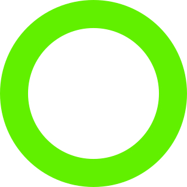

Entenda como a eutrofização prejudica os ecossistemas aquáticos
Uma consequência direta desse problema ambiental é a morte de diversas espécies animais e vegetais, impactando fortemente os ecossistemas aquáticos.
Saiba mais

O que é a eutrofização?
A eutrofização é um processo no qual a quantidade de nutrientes
Principalmente fósforo e nitrogênio, em um corpo d’água, se eleva em excesso. Dessa forma, a água adquire uma coloração turva causando a diminuição de oxigênio disponível. Esse problema global pode ocorrer em lagos, açudes, rios ou em locais específicos de ambientes marinhos, a exemplo da maré vermelha.
Uma consequência direta desse problema ambiental
É a morte de diversas espécies animais e vegetais, impactando fortemente os ecossistemas aquáticos. Corpos d’água naturais possuem uma cadeia trófica equilibrada, ou seja, a quantidade de nutrientes disponíveis não aumenta, nem diminui a reprodução dos produtores
Eutrofização
Indicadores de um rio em processo de eutrofização
- Aumento do nível de clorofila a.
- Quantidade de nitrogênio e fósforo total.
- Demanda bioquímica de oxigênio.
- Profundidade de secchi (turbidez da água).
Normalmente, origina-se da atividade humana
Corpos de água frequentemente constituem o destino final para os sistemas de tratamento de esgoto, resultando na introdução significativa de matéria orgânica proveniente desses sistemas nas águas. Outra significativa fonte de nutrientes provém da água utilizada na irrigação de fazendas: devido à aplicação de fertilizantes e pesticidas, diversas substâncias e nutrientes, como sulfatos e nitratos, dissolvem-se na água e acumulam-se nos corpos d'água mais próximos.
Tipos de eutrofização
Processo natural: normalmente acontece devido ao transporte gradual de matéria orgânica, que se acumula ao
longo de anos, caracterizando-se como uma característica mais lenta do que aquele desencadeado pela
intervenção humana.
Processo cultural : ocorre em razão da ação antrópica por meio do despejo de esgoto, desmatamento, áreas
agrícolas, industrialização, aumento das cidades, adubos e pesticidas.
Processo de eutrofização
A eutrofização é um processo, logo um corpo d’água que se encontra em eutrofização pode estar em qualquer um dos estágios citados a seguir:
-
Poluentes em corpos d’água. -
Aumento da disponibilidade de nutrientes. -
Proliferação de algas. -
Água se torna turva. -
Aumento da mortalidade -
Aumento da matéria orgânica. -
A turbidez compromete a passagem da luz. -
Prejudica os organismos mais profundos. -
Morte dos organismos fotossintetizantes. -
Favorecimento dos decompositores aeróbios. -
Aumento da demanda de oxigênio. -
Morte de decompositores aeróbios. -
Morte de organismos maiores -
Morte de animais: especialmente peixes. -
Plantas: pela falta de oxigênio e pela falta de luz. -
Aumento da matéria orgânica. -
A decomposição incompleta gera produtos tóxicos. -
Os produtos tóxicos levam ao colapso do ambiente.
A eutrofização pode ser contornada?
Apesar de ser um processo longo e duradouro
Uma medida que pode ser tomada de imediato é o bloqueio de lançamentos não naturais de nutrientes nos
corpos hídricos.
Após a interrupção das novas fontes de contaminação, é essencial proceder com a remoção do excesso de
nutrientes.
Posteriormente, é imperativo enriquecer o fornecimento de oxigênio na água, seja por meio
de
aeração artificial ou pela reintrodução de algas. Ambos esses procedimentos não apenas restabelecem os
níveis de oxigênio, mas também eliminam o odor causado pela morte de organismos anaeróbicos.
Com a restauração dos fatores abióticos
Torna-se finalmente viável reintegrar as espécies que originalmente habitavam o ecossistema. Entretanto, esta sequência de passos requer um investimento significativo em termos de tempo e recursos financeiros. Portanto, a preservação de nossos rios, lagos e lagoas acaba sendo uma abordagem muito mais simples e eficaz!
Lagoa Rodrigo de Freitas: Um caso no Brasil
No ano de 2013, uma lagoa localizada na parte sul do Rio de Janeiro, região que abriga os bairros mais
sofisticados da cidade, teve repercussões resultantes da descarga de volumes substanciais de esgoto: uma
grande mortandade de peixes.
Isso ocorreu tanto devido às ligações ilegais na rede de águas pluviais,
como
também devido à transferência de resíduos provenientes das instalações do Jockey Club – que já havia sido
multado pela FEEMA em 2001 – e, de forma ainda mais impactante, devido à entrada de poluentes dos rios
Cabeça e dos Macacos.
Declarada Área de Proteção Permanente em 2008, a Lagoa possui grande quantidade
de organismos vivos, em especial, uma grande variedade de peixes, enquadrados em 59 espécies.
Em 2021, a lagoa voltou a apresentar mortandade de peixes.
Ainda que as ações legislativas tenham
atenuado a situação nos anos recentes e a qualidade da água tenha demonstrado melhorias graças aos
esforços para limitar a entrada de esgoto, a condição eutrófica persiste.
Isso se deve à alta
concentração
de nutrientes presentes no sedimento, mantendo-se presente o risco de mortandade de peixes.
/i.s3.glbimg.com/v1/AUTH_59edd422c0c84a879bd37670ae4f538a/internal_photos/bs/2018/A/L/XDLMacTAGVqBK65plwmw/img-20181220-134626278.jpg)
Experimento sobre eutrofização
Exercicios sobre eutrofização
Clique no botão para realizar o download da nossa lista de exercicios
Baixar listaBaixar gabarito